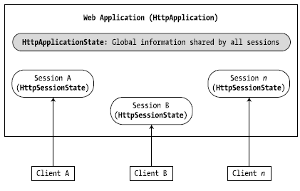
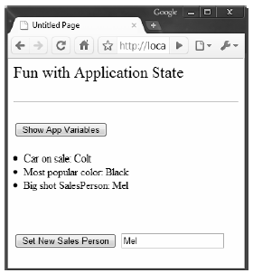

Under ASP.NET, application state is maintained by an instance of the HttpApplicationState type. This class enables you to share global information across all users (and all pages) using your ASP.NET application. Not only can application data be shared by all users on your site, but also if the value of an application-level data point changes, the new value is seen by all users on their next postback.
On the other hand, session state is used to remember information for a specific user (again, such as items in a shopping cart). Physically, a user’s session state is represented by the HttpSessionState class type. When a new user reaches an ASP.NET web application, the runtime will automatically assign that user a new session ID, which by default will expire after 20 minutes of inactivity. Thus, if 20,000 users are logged on to your site, you have 20,000 distinct HttpSessionState objects, each of which is automatically assigned a unique session ID. The relationship between a web application and web sessions is shown in Figure 34-4.
If you have ever worked with classic ASP, you might recall that application- and session-state data is represented using distinct COM objects (e.g., Application and Session). Under ASP.NET, Page-derived types as well as the HttpApplication type use identically named properties (i.e., Application and Session), which expose the underlying HttpApplicationState and HttpSessionState types.
Figure 34-4 The application/session state distinction
The HttpApplicationState type enables developers to share global information across multiple users in an ASP.NET application. Table 34-3 describes some core members of this type.
Table 34-3. Members of the HttpApplicationState Type
| Members | Meaning in Life |
|---|---|
| Add() | This method allows you to add a new name/value pair to the HttpApplicationState object. Do note that this method is typically not used in favor of the indexer of the HttpApplicationState class. |
| AllKeys | This property returns an array of string objects that represent all the names in the HttpApplicationState type. |
| Clear() | This method deletes all items in the HttpApplicationState object. This is functionally equivalent to the RemoveAll() method. |
| Count | This property gets the number of item objects in the HttpApplicationState type. |
| Lock(), UnLock() | These two methods are used when you wish to alter a set of application variables in a thread-safe manner. |
| RemoveAll(), Remove(), RemoveAt() | These methods remove a specific item (by string name) within the HttpApplicationState object. RemoveAt() removes the item via a numerical indexer. |
To illustrate working with application state, create a new Empty Web Site project named AppState (and insert a new Web Form). Next, insert a new Global.asax file. When you create data members that can be shared among all users, you need to establish a set of name/value pairs. In most cases, the most natural place to do so is within the Application_Start() event handler in Global.asax.cs, for example:
void Application_Start(Object sender, EventArgs e) { // Set up some application variables. Application["SalesPersonOfTheMonth"] = "Chucky"; Application["CurrentCarOnSale"] = "Colt"; Application["MostPopularColorOnLot"] = "Black"; }
During the lifetime of your web application (which is to say, until the web application is manually shut down or until the final user times out), any user on any page may access these values as necessary. Assume you have a page that will display the current discount car within a Label via a button Click event handler:
protected void btnShowCarOnSale_Click(object sender, EventArgs arg) { lblCurrCarOnSale.Text = string.Format("Sale on {0}'s today!", (string)Application["CurrentCarOnSale"]); }
As with the ViewState property, notice how you should cast the value returned from the HttpApplicationState object into the correct underlying type because the Application property operates on general System.Object types.
Now, given that the Application property can hold any type, it should stand to reason that you can place custom types (or any .NET object) within your site’s application state. Assume you’d rather maintain the three current application variables within a strongly typed class named CarLotInfo:
public class CarLotInfo { public CarLotInfo(string s, string c, string m) { salesPersonOfTheMonth = s; currentCarOnSale = c; mostPopularColorOnLot = m; } // Public for easy access, could also make use of automatic // property syntax. public string salesPersonOfTheMonth; public string currentCarOnSale; public string mostPopularColorOnLot; }
With this helper class in place, you could modify the Application_Start() event handler as follows:
void Application_Start(Object sender, EventArgs e) { // Place a custom object in the application data sector. Application["CarSiteInfo"] = new CarLotInfo("Chucky", "Colt", "Black"); }
and then access the information using the public field data within a server-side Click event handler for a Button control named btnShowAppVariables:
protected void btnShowAppVariables_Click(object sender, EventArgs e) { CarLotInfo appVars = ((CarLotInfo)Application["CarSiteInfo"]); string appState = string.Format("<li>Car on sale: {0}</li>", appVars.currentCarOnSale); appState += string.Format("<li>Most popular color: {0}</li>", appVars.mostPopularColorOnLot); appState += string.Format("<li>Big shot SalesPerson: {0}</li>", appVars.salesPersonOfTheMonth); lblAppVariables.Text = appState; }
Given that the current car-on-sale data is now exposed from a custom class type, your btnShowCarOnSale Click event handler would also need to be updated, like so:
protected void btnShowCarOnSale_Click1(object sender, EventArgs e) { lblCurrCarOnSale.Text = String.Format("Sale on {0}'s today!", ((CarLotInfo)Application["CarSiteInfo"]).currentCarOnSale); }
You may programmatically update or delete any or all application-wide data items using members of the HttpApplicationState type during the execution of your web application. For example, to delete a specific item, simply call the Remove() method. If you wish to destroy all application-level data, call RemoveAll():
private void CleanAppData() { // Remove a single item via string name. Application.Remove("SomeItemIDontNeed"); // Destroy all application data! Application.RemoveAll(); }
If you want to change the value of an existing application-level data item, you need only make a new assignment to the data item in question. Assume your page now has a Button that allows your user to change the current hotshot salesperson by reading in a value from a TextBox named txtNewSP. The Click event handler is as you’d expect:
protected void btnSetNewSP_Click(object sender, EventArgs e) { // Set the new Salesperson. ((CarLotInfo)Application["CarSiteInfo"]).salesPersonOfTheMonth = txtNewSP.Text; }
If you run the web application, you’ll find that the application-level data item has been updated. Furthermore, given that application variables are accessible by any user on any page in the Web application, if you launched three or four instances of your web browser, you’d find that if one instance changes the current hotshot salesperson, each of the other browsers displays the new value on postback. Figure 34-5 shows some possible output.
Figure 34-5 Displaying application data
Understand that if you have a situation where a set of application-level variables must be updated as a unit, you risk the possibility of data corruption (since it is technically possible that an applicationlevel data point may be changed while another user is attempting to access it!). You could take the long road and manually lock down the logic using threading primitives of the System.Threading namespace, but the HttpApplicationState type has two methods, Lock() and Unlock(), that automatically ensure thread safety:
// Safely access related application data. Application.Lock(); Application["SalesPersonOfTheMonth"] = "Maxine"; Application["CurrentBonusedEmployee"] = Application["SalesPersonOfTheMonth"]; Application.UnLock();
The HttpApplicationState type is designed to maintain the values of the items it contains until one of two situations occurs: the last user on your site times out (or manually logs out) or someone manually shuts down the web site via IIS. In either case, the Application_End() method of the HttpApplicationderived type will automatically be called. Within this event handler, you are able to perform whatever sort of cleanup is necessary:
void Application_End(Object sender, EventArgs e) { // Write current application variables // to a database or whatever else you need to do... }
Source Code The AppState web site is included under the Chapter 34 subdirectory.